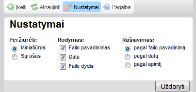

"Nustatymų" mygtukas, esantis įrankių juostoje, atveria "Nustatymų ", kur galite konfigūruoti CKFinder. Štai pavyzdys:

Visi nustatymai yra automatiškai išsaugojami naudojant naršyklės "sausainėlius". Sausainėliai
Jei norite užverti nustatymų skydelį, tiesiog spustelėkite "Uždaryti" mygtuką, arba "Nustatymai"
Visi parametrai yra susiję su Failų skydeliu. Jie yra naudojami informacijos vaizdavimui skydelyje kontroliuoti. Failų valdymo skydelis
Nustato informacijos kiekį failų skydelyje. Štai pateiktas pavyzdys nuo minimalaus galimų pasirinkimų iki maksimalaus:
|
|
|
|
|
Nustato, kokia tvarka yra rūšiuojami failai. Rūšiavimas gali būti nustatomas pagal abėcėlę, failo pavadinimą, datą pagal failų naujumą, arba netgi pagal failo apimtį.